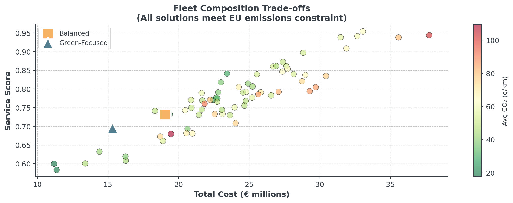

| Type | Purchase Cost (€) | Operating (€/km) | CO2 (g/km) | Speed (km/h) | Capacity (parcels) | Reliability |
|---|---|---|---|---|---|---|
| E-Truck | 75000 | 0.18 | 0 | 55 | 300 | 0.93 |
| Hybrid | 45000 | 0.25 | 95 | 65 | 200 | 0.95 |
| Diesel | 35000 | 0.38 | 185 | 70 | 250 | 0.88 |
| E-Bike | 12000 | 0.05 | 0 | 30 | 50 | 0.98 |
| Auto | 95000 | 0.12 | 0 | 40 | 150 | 0.94 |
Multi-Objective Optimization
Lecture 8 - Management Science
Dr. Tobias Vlćek
Introduction
Client Briefing: EcoExpress Logistics
Operations Director’s Dilemma:
“EU regulations demand 40% emission cuts, but we can’t sacrifice profitability, service quality, or reliability!”
The Fleet Challenge
EcoExpress operates regional last-mile delivery across 3 cities
- EU Green Deal: 40% emission reduction by 2025
- Rising fuel costs (€2.1/L diesel)
- Amazon entering our market (speed pressure)
- Driver shortage (need automation-friendly vehicles)
Question: How do we transform our fleet while staying competitive?
Today’s Learning Objectives
By the end of this lecture, you will be able to:
- Explain why most decisions involve competing objectives
- Identify and visualize Pareto optimal solutions
- Apply normalization techniques to make objectives comparable
- Implement apporaches to find trade-off solutions
- Make decisions from a Pareto frontier
Quick Recap: Local Search
Last week we optimized routes for delivery:
- Started with greedy construction (e.g. Nearest Neighbor)
- Improved with local search (e.g. 2-opt)
- Considered time windows
- But: We only optimized distance
Question: What if we also care about emissions, cost, AND customer satisfaction?
The Problem
Single vs Multi-Objective
Single Objective
- “Minimize total distance”
- Clear winner. Easy, right!
Multiple Objectives
- “Minimize cost AND emissions AND maximize speed”
- No clear answer…
Question: Any idea how to approach this?
EcoExpress Vehicle Options
Question: Which vehicle is “best” for EcoExpress?
Trade-offs Everywhere

Every vehicle excels at something different!
Real Business Constraints
Beyond the numbers, consider:
- EU regulations: Carbon tax of €100/ton CO₂ starting 2025
- Competition: Amazon promises 2-hour delivery
- Labor market: Autonomous vehicles reduce driver dependency
- Urban zones: Zero-emission zones in city centers
- Peak times: Black Friday = 3x normal volume
There is no single “optimal” solution - only trade-offs
Pareto Optimality
Dominated Solutions
A solution is dominated if another solution is:

Better in at least one objective and not worse in any objective!
The Pareto Frontier
The Pareto frontier is the set of all non-dominated solutions
- No solution is objectively “better”
- Each represents a different trade-off
- Moving along frontier: gain in one objective, loss in another
- Decision makers choose based on preferences
Question Do you think you get the idea?
Find the Non-Dominated

Question: Which fleets are non-dominated?
Three+ Objectives
With 3 objectives, the Pareto frontier becomes a surface:

Harder to visualize, but same principle applies!
Fleet Composition Problem
The Fleet Challenge
EcoExpress needs to replace their 80 diesel vans
- Must meet EU regulation: Average emissions ≤ 111 g CO₂/km
- Need capacity for 22,000 parcels/day
- Must balance cost vs. service quality
- 5 vehicle types available, each with trade-offs
Question: How do we choose the right mix?
Vehicle Options Recap
| Type | Purchase Cost (€) | Operating (€/km) | CO2 (g/km) | Speed (km/h) | Capacity (parcels) | Reliability |
|---|---|---|---|---|---|---|
| E-Truck | 75000 | 0.18 | 0 | 55 | 300 | 0.93 |
| Hybrid | 45000 | 0.25 | 95 | 65 | 200 | 0.95 |
| Diesel | 35000 | 0.38 | 185 | 70 | 250 | 0.88 |
| E-Bike | 12000 | 0.05 | 0 | 30 | 50 | 0.98 |
| Auto | 95000 | 0.12 | 0 | 40 | 150 | 0.94 |
Notice: No single vehicle is “best” at everything!
Fleet Composition Framework
This is a discrete selection problem, not continuous allocation
Decision Variables:
- Fleet: How many of each vehicle type? (discrete/integer)
- \(n_i\) = number of vehicles of type \(i\) (integers!)
- Example: \(n_{\text{E-Truck}} = 20\), \(n_{\text{Hybrid}} = 30\), etc.
Objective 1: Total Cost
Purchase cost + Operating cost over 3 years
\[\text{Total Cost} = \sum_{i} n_i \cdot \left( P_i + O_i \cdot d \cdot y \right)\]
- \(n_i\) = quantity of vehicle type \(i\)
- \(P_i\) = purchase cost of vehicle type \(i\)
- \(O_i\) = operating cost per km for type \(i\)
- \(d\) = daily distance × days per year
- \(y\) = years
Objective 2: Service Score
Composite measure of fleet performance
\[\text{Service Score} = 0.5 \cdot C_{\text{score}} + 0.3 \cdot R_{\text{score}} + 0.2 \cdot S_{\text{score}}\]
- \(C_{\text{score}} = \min\left(1.0, \frac{\text{Total Capacity}}{22000}\right)\) (capacity adequacy)
- \(R_{\text{score}} = \frac{\sum n_i \cdot r_i}{\sum n_i}\) (weighted avg. reliability)
- \(S_{\text{score}} = \frac{\sum n_i \cdot s_i}{70 \cdot \sum n_i}\) (normalized speed)
Service score captures multiple performance dimensions in one metric!
Hard Constraint: Emissions
EU regulation creates a feasibility boundary
\[\text{Average CO}_2 = \frac{\sum_{i} n_i \cdot e_i}{\sum_{i} n_i} \leq 111 \text{ g/km}\]
Where \(e_i\) = CO₂ emissions per km for vehicle type \(i\)
This eliminates some solutions:
- All diesel vans: 185 g/km > 111
- Mix with too many diesel: Still violates
- Zero-emission + some diesel: Might work
Data Source
Where Do These Numbers Come From?
Vehicle Specifications:
- Purchase costs: Manufacturer quotes, market research
- Operating costs: Fuel/electricity prices, maintenance records
- Capacity: Vehicle specs (cargo volume, weight limits)
- Reliability: Historical uptime data, manufacturer warranties
- EU Standards: WLTP certification for vehicles
- Electric vehicles: Grid carbon intensity (kWh → g CO₂)
Example Fleet Comparison
Three Fleet Strategies:
name cost service co2 capacity vehicles
Cost-Focused 28.9996 0.809705 120.714286 15000 70
Balanced 19.0478 0.731840 33.928571 13250 70
Green-Focused 15.3102 0.695373 0.000000 12750 75
Cost-Focused: ✗ VIOLATES (CO2: 120.7 g/km)
Balanced: ✓ Compliant (CO2: 33.9 g/km)
Green-Focused: ✓ Compliant (CO2: 0.0 g/km)Question: Which strategy would you choose?
Visualizing Fleet Trade-offs

Generated 68 feasible fleet compositionsEach point is a different fleet mix, all meeting emissions constraint!
Solution Approaches
Multi-Objective Optimization
You can use optimization solvers or heuristics!
With Optimization Solvers
- Weighted Sum Method
- ε-Constraint Method
- Goal Programming
- Optimal solutions
- Need mathematical model
With Heuristics
- Weighted Greedy Construction
- Multi-Objective Local Search
- Metaheuristics
- Good solutions, fast
- No optimality proof
In this lecture we use heuristic approaches!
Foundation: Extreme Points
First step for BOTH approaches - find the boundaries:

Question: Why is normalization essential?
Critical: Normalization
Without it, your analysis is meaningless

Question: Any intuition on how to do [0,1] normalization?
How to Normalize
The Normalization Formula for [0,1]
\[\text{Normalized}_i = \frac{x_i - x_{min}}{x_{max} - x_{min}}\]
In Python, this is rather simple!
Easy, right?
Extreme Points
There are several reasons why extreme points matter:
- Trade-off Space: Min/max values bound your Pareto frontier
- Enable Proper Normalization: Need ranges for scaling to [0,1]
- Feasibility: If single objectives not achievable, problem infeasible
- Stakeholder: “Best cost is €50k, best emissions is 40kg”
Computational Complexity
How hard does it get with more objectives?

Why? Because there are just way more potential solutions to check!
Solver-Based Methods
Quick overview - you won’t implement these in assignments
- Weighted Sum: Minimize \(w_1 \times \text{cost} + w_2 \times \text{emissions}\)
- Simple, fast for convex problems
- ε-Constraint: Minimize cost subject to emissions \(\leq \varepsilon\)
- Systematically vary \(\varepsilon\) to find complete frontier
- Goal Programming: Minimize deviations from targets
- Set target for each objective, minimize weighted deviations
For your fleet optimization: You’ll use heuristic approaches instead!
Heuristic Approach
The Heuristic Strategy
For problems without mathematical models
- Construction: Build initial solutions with weighted greedy
- Improvement: Multi-objective local search
- Selection: Filter dominated solutions to find Pareto frontier
Key difference from solvers:
- Solvers: Need mathematical model, guarantee optimality
- Heuristics: Work with any evaluation function, find good solutions fast
Why Heuristics?
Depending on the problem:
- Combinatorial explosion
- Huge solution space even for one problem
- Evaluating one solution might thus take too long
- Need diverse Pareto frontier, not just one “optimal” solution
- Open Source Solvers too slow
- Commercial solvers too expensive
Question: How do we build good solutions without a solver?
The Three-Stage Heuristic Process

This is what you’ll implement in your assignments!
Construction & Improvement
Construction Methods for MOO
How to build initial solutions when you have multiple objectives?

Three choices (for starters). Let’s check them out!
Weighted Greedy Construction
Making greedy choices on a weighted objective
- Choose weight vector w = (w₁, w₂)
- At each step, pick the choice that minimizes: \[w_1 \cdot \text{cost}(x) + w_2 \cdot \text{emissions}(x)\]
- Build complete solution greedily
- Repeat with different weights to explore frontier
Different weights explore different trade-offs! Easy, right?
Sequential Greedy (Lexicographic)
Optimize one objective at a time, in priority order
- Rank objectives by priority
- E.g. cost (most important) and then emissions (tie-breaker)
- At each step:
- Find choices that minimize primary objective
- If tie → use secondary objective
- Build one working solution
We could also accept primary values within 10% of best so secondary has more influence!
Diverse Starting Pool
Generate many random solutions, keep the non-dominated ones
- Generate N random solutions (e.g., N=100)
- Evaluate all solutions on both objectives
- Filter to keep only non-dominated solutions
- Result: A diverse set of Pareto-optimal solutions
- Explores entire solution space
- No bias toward specific weights
- Great for warm-starting local search
Local Search for Multi-Objective
Special moves that improve multiple objectives:

Question: Which moves are acceptable?
MOO Local Search Rules
Accept a move if:
- Dominance: New solution dominates current (win-win!)
- Trade-off: Improves primary, acceptable loss in secondary
- Probabilistic: Use temperature (like simulated annealing)
Always keep all your objectives in mind when making decisions.
From Pareto Front to Decision
How to Choose!
- The Knee Point: Find the “elbow” where improvement slows
- Satisficing Levels: Set minimum acceptable thresholds
- Cost must be < €100k (budget constraint)
- Emissions must be < 100 kg (regulatory limit)
- Service level must be > 90% (customer requirement)
- Stakeholder Preferences: Let business priorities guide
- Sustainability: Minimum emissions that meets constraints
- Operations: Maximum service level within budget
Weighting has an Impact
The weights thus reflect your values!

Depending on your weight, the choice will vary.
Advanced
Speed vs Sustainability Dilemma
The Three-Way Trade-off in E-Commerce
- Minimize Delivery Time (1-day/2-hour promise)
- Minimize Cost (fuel, labor, fulfillment)
- Minimize Environmental Impact (carbon footprint)
Faster delivery = More vehicles less full = Higher emissions
Question: What could retailers do?
Moving the Frontier
Instead of point on the frontier, move the entire frontier:
Question: Any idea of examples?
R&D can fundamentally change what’s possible!
Briefing
Today
Hour 2: This Lecture
- Multi-objective
- Pareto optimality
- Weighted greedy
- Local search MOO
Hour 3: Notebook
- Bean Counter CEO
- Find Pareto frontier
- Apply weighted greedy
- Normalize objectives
Hour 4: Competition
- Fleet composition
- Vehicle selection
- Cost vs service
- Justify choice!
The Competition Challenge
EcoExpress Sustainable Fleet Design
- Select optimal fleet mix (5 vehicle types)
- Balance cost vs. service score
- Meet EU emission constraint (≤ 111 g CO₂/km)
- Ensure sufficient capacity (22,000 parcels/day)
Find the best trade-off for your business priorities!
Choosing Your MOO Approach
Different situations call for different methods:
| Situation | Best | Why |
|---|---|---|
| Clear priorities | Sequential greedy | Fast, hierarchy |
| Exploring | Weighted greedy | Different solutions |
| Many solutions | Diverse pool | Builds frontier |
| Quick solution | Single weighted | One good compromise |
| Improve existing | Multi-objective local | Refines trade-offs |
Competition? Generate diverse pool or weigted, then improve with local search.
Implementation Pitfalls to Avoid
Common bugs that cost you time:
- Forgetting to Normalize
- Always normalize to [0,1] first!
- Optimizing Too Many Objectives
- 2-3: Manageable, 4+: Exponentially harder
- Combine related objectives or use constraints
- Not Checking Solution Feasibility
- Always verify constraints after optimization
Summary
Key Takeaways:
- Real decisions have multiple conflicting objectives
- Pareto frontier shows all rational trade-offs
- Normalization is essential for fair comparison
- Weights reflect values, make them explicit
- Visualization crucial for decision-making
Break!
Take 20 minutes, then we start the practice notebook
Next up: You’ll become Bean Counter’s expert
Then: The Sustainability competition
Multi-Objective Optimization | Dr. Tobias Vlćek | Home